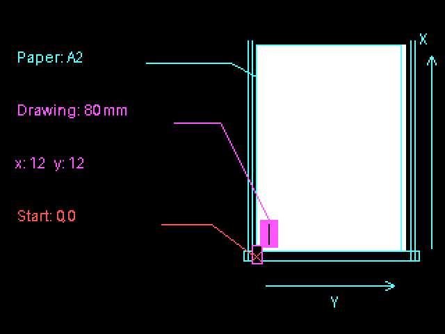

Guide
Start with the circle in Setup. The drawing examples below use its 400 × 400 canvas. Paper settings are introduced in the placement section.
1. Change the drawing

plot. in front is recorded for the pen. line(80, 200, 320, 200) stays on screen; plot.line(80, 200, 320, 200) also becomes a 60 mm line on paper with the Setup sketch’s width: 100.Replace plot.circle(200, 200, 300) in draw() with this loop. Keep setup(), background(), noFill(), showBed() and go().
for (let diameter = 60; diameter <= 300; diameter += 40) {
plot.circle(200, 200, diameter);
}Each pass adds a circle with a larger diameter. Try changing the step from 40 to 20 to put the rings closer together.
Other shapes
plot.… records these 2D shapes: point, line, circle, ellipse, arc, rect, square, triangle, quad, plus polyline and polygon, which take [x, y] pairs or { x, y } objects. Angles follow angleMode(). A point is recorded as a 0.24 mm dash. Rectangles use corner coordinates; ellipse and arc coordinates refer to their centre. Rounded rectangles and screen transforms are not recorded.
plot.square(30, 10, 40);
plot.triangle(80, 50, 120, 10, 160, 50);
plot.arc(330, 30, 40, 40, 0, HALF_PI, PIE);
plot.polygon([[0, 0], [40, 0], [40, 40]]);
plot.triangle(80, 320, 200, 80, 320, 320) to draw three joined points.
plot.point(): the recorded point is a 0.24 mm dash. A row of points becomes a texture, even though every mark is a very short line.Draw a wave
Replace the drawing calls with sampled points:
let points = [];
for (let x = 40; x <= 360; x += 4) {
points.push([x, 200 + 40 * Math.sin(x * 0.04)]);
}
plot.polyline(points);Math.sin() gives each point its height. Change 40 to 10 for a shallower wave. The Wave lines example repeats a wave across several rows.
Redraw a sketch
background() clears the screen. Add plot.clear() before the drawing calls when a key or button redraws your sketch; it replaces the previous recording. Without it, each redraw adds more shapes to the same plot. Keep noLoop() for a drawing that changes only when requested.

draw() records one more shape every frame, and background() clears only the screen. Five seconds of random circles become 300 recorded circles, about 10 minutes of plotting. Identical shapes are merged when the plan is made; shapes that change are not.2. Paper and placement
Your sketch uses pixels. The plotter uses millimetres. createPlot() sets the size and position of the drawing on your paper.
Let the library fit the drawing
Remove width: 100 from the circle sketch to let the library fit the canvas inside the margin and centre it on the paper:
plot = createPlot({
paper: "A2",
paperX: 0,
paperY: 0,
margin: 12
});Set the drawing size
Change width: 100 to width: 120 in createPlot() to make the 400-pixel canvas 120 mm wide on paper. The circle's diameter becomes 90 mm. Leave out x and y to keep the drawing centred on the sheet.
Use the paper on your machine
Set paper to its format. paperX and paperY locate the paper corner from the machine's starting point. Use zero when the paper starts at that point.
In my setup, X runs along the long rails and Y across them. The pen starts at the lower-left corner. The starting point stays fixed when you move the paper.
Place the drawing near the paper corner
Replace createPlot() in the first sketch with:
plot = createPlot({
paper: "A2",
paperX: 0,
paperY: 0,
margin: 12,
x: 12,
y: 12,
width: 80
});width: 80 makes the canvas 80 mm wide on paper. Its proportions stay the same. x and y place the canvas corner 12 mm from the machine's starting point along each axis.

If the paper starts elsewhere, enter its position in paperX and paperY. For the same corner placement, set x to paperX + margin and y to paperY + margin. These are distances from the machine origin, not from the paper corner.
Check the placement
Keep this after the drawing calls, before plot.go():
plot.showBed();The preview shows the paper and the recorded drawing. Its red cross marks the machine origin. The preview turns X to the right and Y down; on my physical machine, X runs up the rails and Y to the right. Match the axes when you compare it with the machine.
margin leaves space around the drawing. Paper or drawings that do not fit are refused before plotting. orientation: "auto" chooses an orientation that fits; use "portrait" or "landscape" to specify it. The resolved paper settings are available in plot.paper.
3. Fills
Replace the circle call with the square below. Keep noFill() for the screen drawing.
Fills come from the core and are drawn back on the canvas, so screen and paper show the same hatching. Spacing is in millimetres on the bed.
let square = [[100, 100], [300, 100], [300, 300], [100, 300]];
plot.hatch(square, 3, PI / 4); // spacing in mm, angle
plot.polygon(square);Hatch · Cross-hatch · Stipple

Replace plot.hatch(square, 3, PI / 4) with plot.crossHatch(square, 4) for lines in two directions, or with plot.stipple(square, 150, 3) for 150 small marks. The last stipple argument is a seed; keeping it gives the same positions.
4. Plotting the drawing
p5.penplotter can send your recorded drawing to the plotter through the browser's USB connection. This is what direct plotting means here.
Draw everything, then plot
Use plot.go() after the drawing calls, as in the circle sketch. You can add more shapes before it. They appear on screen, and a click starts the recorded drawing on paper.
For the physical starting corner, paper and connection, follow Setup.

Draw one object, then the next
Use plot.sequence() when you want the sketch to prepare one object, plot it, then prepare the next. The library waits for the plotter to finish each object before asking your drawing function for another. The carriage keeps its position between objects and returns home after the last one.
A sequence clears the recording before each object. The marks already drawn on screen and paper remain. New strokes arriving while the plotter is moving are not supported.
Keep the circle sketch's setup() and replace draw() with this function:
function draw() {
background(255);
noFill();
plot.sequence(index => {
if (index === 5) return false;
plot.circle(80 + index * 60, 200, 40);
return true;
}).catch(console.error);
}The index starts at zero. Each call records one circle and returns true to continue. Returning false ends the sequence. Prepare the paper and pen as in Setup, press Play, then click the drawing to start. The Chaos game uses this to plot one point at a time.
With go(), use plot.go({ plan: { strategy: "drawn" } }) to keep the drawing order.
Separate plots with go()
Keep the same plot and paper settings. Wait for each go() to complete, clear the recording, then draw the next object. Each separate plot returns home and can ask for another click.
// Call from a button or key handler, using the existing plot.
async function plotTwoObjects() {
plot.clear();
plot.rect(10, 10, 100, 80);
const first = await plot.go();
if (first.status !== "complete") return;
plot.clear();
plot.circle(200, 125, 60);
await plot.go();
}Call plotTwoObjects() from a button or key handler after creating plot. Check status: "complete" before continuing.
5. Routes and file exports
plot.engine gives you the core: layers, pens, cleanup, route planning and exports. createPlotterEngine() creates a separate core engine; its shapes are recorded but not drawn on screen.

plot.plan({ strategy: "drawn" }) with plot.plan({ strategy: "nearest" }). Keep the drawn order when watching the picture appear is part of the work.
plot.engine.pen() and plot.engine.layer(), and set the p5 screen colour separately with stroke(). Assigning a pen does not pause the machine. For direct plotting with multiple pens, supply an onToolChange callback to plot.go() that waits for you to finish each physical pen change.
plot.engine.importSVG() reads supported SVG geometry; the engine can then export SVG, HPGL or G-code. Try the engine’s SVG to pen page with a simple drawing of your own.To save the recorded drawing as SVG, use plot.engine.exportSVG(). It returns SVG text which you can save as a file. Exporting does not open the plotter connection.
Using JavaScript modules
Using JavaScript modules
Use these alternatives when your sketch needs JavaScript modules. The regular editor setup is on Setup.
Instance mode, sketch as a module
Put the imports in sketch.js and load it as a module. Create the sketch with new p5(…); p5 calls use the p. prefix.
index.html
<script src="https://cdn.jsdelivr.net/npm/p5@2.2.2/lib/p5.js"></script>
<script type="module" src="sketch.js"></script>sketch.js
import { install } from "https://cdn.jsdelivr.net/gh/seb-prjcts-be/p5.penplotter@v0.2.5/dist/p5.penplotter.js";
install(p5);
new p5(function sketch(p) {
let plot;
p.setup = function () {
p.createCanvas(400, 400);
plot = p.createPlot({ paper: "A2", paperX: 0, paperY: 0, width: 100 });
p.noLoop();
};
p.draw = function () {
p.background("#ffffff");
p.stroke("#111111");
p.noFill();
plot.circle(200, 200, 300);
plot.showBed();
plot.go(); // ready: click the drawing to plot, click again to stop
};
});Instance mode keeps each sketch's p5 calls on its own p object. Use it for several sketches on one page or when the sketch already uses modules.
Global mode from a module
Keep the imports in the sketch module and assign each p5 callback to window.
index.html
<script src="https://cdn.jsdelivr.net/npm/p5@2.2.2/lib/p5.js"></script>
<script type="module" src="sketch.js"></script>sketch.js
import { install } from "https://cdn.jsdelivr.net/gh/seb-prjcts-be/p5.penplotter@v0.2.5/dist/p5.penplotter.js";
install(p5);
let plot;
function setup() {
createCanvas(400, 400);
plot = createPlot({ paper: "A2", paperX: 0, paperY: 0, width: 100 });
noLoop();
}
function draw() {
background("#ffffff");
stroke("#111111");
noFill();
plot.circle(200, 200, 300);
plot.showBed();
plot.go(); // ready: click the drawing to plot, click again to stop
}
window.setup = setup;
window.draw = draw;Why it works
The module runs at step 4 of the load sequence, connects the adapter, and puts setup and draw on window. At step 6 p5 finds them there, exactly as it would find a classic script's functions. Inside the functions, createCanvas and key resolve because p5 in global mode copies its API onto window before calling setup().
When to use it
When you want one file and no p. prefix, and you are fine with the window. lines at the bottom. Every p5 callback you use (mousePressed, windowResized) needs its own line. A callback that is not assigned to window will not be called by p5.
Import maps
An import map assigns a name to each module URL in index.html. The sketch imports by that name.
<script src="https://cdn.jsdelivr.net/npm/p5@2.2.2/lib/p5.js"></script>
<script type="importmap">
{
"imports": {
"p5.penplotter": "https://cdn.jsdelivr.net/gh/seb-prjcts-be/p5.penplotter@v0.2.5/dist/p5.penplotter.js"
}
}
</script>
<script type="module" src="sketch.js"></script>import { install } from "p5.penplotter";
install(p5);The import map must appear before the first module script. Bare names like "p5.penplotter" are what a package manager would resolve; the import map does the same job in the browser, without one.
The bundle includes core 0.3.1 and its EBB driver. Keep the bundle URL fixed to preserve this tested source combination.
Adapter reference
| Call or option | Units and behaviour |
|---|---|
createPlot(options) | Returns a P5Plot. Shape coordinates are canvas pixels. width, x and y are millimetres; without paper or scale options, one pixel maps to one millimetre. |
paper, margin, orientation | A0–A6; default margin 12 mm and orientation auto. Fits and centres the canvas. width or mmPerPixel overrides fitting; paperX/paperY locate the sheet from the machine origin. Set both to zero for paper in the starting corner; omitted values centre the sheet on the bed. |
point, line, circle, ellipse, arc | Draw on screen and record geometry. Coordinates and sizes are canvas pixels; circle takes a diameter. A point records a 0.24 mm dash. Angles follow angleMode(). |
rect, square, triangle, quad | Draw and record shapes in canvas pixels. Rectangles use corner coordinates. Screen transforms and rounded corners are not recorded. |
polyline(points), polygon(points) | Accept [x, y] pairs or { x, y } objects in canvas pixels. Polygon closes the path. |
hatch(points, spacing, angle), crossHatch(points, spacing, angle) | Fill a polygon with lines in one or two directions. Points are canvas pixels; spacing is millimetres on paper. Angles follow angleMode(). |
stipple(points, count, seed) | Fill a polygon with small marks. Points are canvas pixels. Count sets the number of marks; seed repeats their positions. |
plot.engine.exportSVG() | Returns the recorded drawing as SVG text in physical units. Does not open a plotter connection. |
clear(), plan(options) | Clear starts an empty recording. Plan returns the core PlotPlan and checks selected paper margins. strategy: "drawn" preserves drawing order. |
sequence(prepare, options) | One click starts the sequence. Clears before preparing each object and waits for completion. Return false to finish. Use plan to choose drawing order. |
showBed([canvas]) | Shows the bed and paper with a red origin cross. Creates and reuses a separate preview when no canvas is supplied. Call after recording the drawing. |
drawBed(canvas, { sheet }) | Uses a separate HTML canvas or 2D context. Sheet position and size are millimetres; defaults to selected paper, then mapped canvas. |
go(), stop() | Go from setup/draw waits for a click and needs the installed driver. Stop requests an abort; neither is a preview method. |
createPlotterEngine(), drawRoute(plan) | Advanced core route. Engine geometry uses document units; its circle takes a radius. DrawRoute displays plan coordinates directly as pixels; it does not convert millimetres back to sketch pixels. Use showBed for a physical placement preview. |
Architecture describes the recording limits.